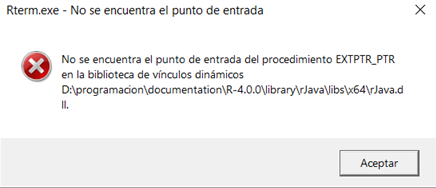

Knowlege base
A compact list of tools and strategies useful when working in IT.
Inventory
A full description of all of the hardware , software, licenses available at your disposal with all the information, description and specifications that might become in handy to have.
System info
Ticket System
The following is a ticket system design to document the debugging proccess used when encountering errors and misconfigurations in a daily use. This system is intended for personal use and might struggle to scale for more complex organizations. Some of the issues this system does not take into account and lack the capabilities to deal with can be found here.
Setting up the rules
Structure: Each ticket must have the following components: an identification code, a summary, an status and short description of the debuggin process. Some other components that become important in a complex organization but are not implemented in this particular system are the following: priority, date of filing, channel used to file, entity responsable, comments, feed back and costumer satisfaction.
identification code: is an numberic code that uniquely identifies each ticket filed, it is composed of two parts: The category part, a four digit number each one representing a level, inspired by the Dewey Decimal Classification system (DDC) would ticket and id number and
Recategorize No ticket gets eleminated
periodic archiving
0000-00
[][][][]-[][]
OS: 1 -> Windows 2 -> Linux 3 -> dual boot
Aplication type: 1 -> System 2 -> Networking and Internet related 3 -> Programming tools 4 -> Ofimatic software
Ticket list
- 0100-01 SD card not writable: solved unable to boot rasbain into the SD card it is not writable.
enable writable permissions. enter command line and run diskpart. "did not solve the issue"
attributes disk clear readonly
for security issues SD cards have a lock slide that limits the capabilitie to write into it.
remove the SD card and unlock the slide.
- 1200-01 math equations not display in firefox browser: solved addblockers can interference with mathajax capabilities. white list the mathjax extension.

- 1300-01 dll missing: solved when openning Rstudio after a installing a new package
xlsxand loading it throughlibrary(xlsx)error rJava.dll missing. R version 4.0.

register back the .dll file. "did not solve the issue"
regsvr32 /u "D:/programacion/documentation/R-4.0.0/library/rJava/libs/x64/rJava.dll"
depurate the dll file. "not tried"
update R from version 4.0 version to 4.2, when loading the library library(xlsx) a more clear error message is presented.
error: Your java version is 14. Need 1.5.0 or higher.
update java "solved"
- 1300-02 git LSB SSH uncompatible

- 1400-01 krita crash solved krita would load and then suddenly close might be related with another Adobe bug which closses Ilustrator
check crash log
%LOCALAPPDATA%kritacrash.log
krita.exe caused an Access Violation at location 00007FFE282FDF5E in module nvwgf2umx.dll Reading from location 000000080000006C.
AddrPC Params
00007FFE282FDF5E 00000000033FEFB8 00000000005F9E80 0000000000000002 nvwgf2umx.dll!0xedf5e OpenAdapter12+0xe432e
The errors show that OpenAdapter12+0xe432e is not recognize by the nvwgf2umx.dll nvidia library which makes it incompatible with. remove it from the krita application from NVIDIA control panel. the application would be process by the Intel GPU.

2100-01 sound unsolved sub woffer not being used in ubuntu
2100-02 screen drivers unsolved Linux does not support NVIDIA GPU drive which make the screen present some glitches. from settigns -> about find the current graphics to be "NV11/ / Mesa inta Hd Graphics 530" graphic ubuntu-drivers devices
sudo ubuntu-drivers autoinstall sudo lshw -c display2100-03 used long path in terminal: solved want to access some directories from terminal, but they have long path names makeing it unconfortable to work with them in the shell. use simbolik links to other the home directory (~) under a hidden folder name
pathsand load them into the shell configuration file~/.bashr
mkdir ~/.paths
cd ~/.paths
ln -s /media/jsds/Documentos/Documentos/codigo code
ln -s /media/jsds/Documentos/Documentos/codigo/Google_IT_support support
echo 'CDPATH=~/.paths' >> ~/.bashrc
source ~/.bashrc
2100-03 CRS dongle unsolved set up USB CRS dongle
2200-01 play netflix and amazon: solved Both netflix and amazon prime are unable to play in ubuntu version: 2020.4 in firefox version: 79.
In firefox enble DRM, from settings enable the DRM option, " this was a required but not suficient step".
install missing drivers sudo apt install ubuntu-restricted-extras
- 2100-02 markdown view in firefox unsolved firefox version:82.0.3 is unable to open markdown files because it treats them as a downloadable file.
trying by updating the MIME
touch ~/.local/share/mime/packages/text-markdown.xml
xdg-open ~/.local/share/mime/packages/text-markdown.xml
paste inside the file:
<?xml version="1.0"?>
<mime-info xmlns='http://www.freedesktop.org/standards/shared-mime-info'>
<mime-type type="text/plain">
<glob pattern="*.md"/>
<glob pattern="*.mkd"/>
<glob pattern="*.markdown"/>
</mime-type>
</mime-info>
Save & quit.
update-mime-database ~/.local/share/mime
3100-01 mount NTF partition dual boot
3300-01 git all files changed unsolved windows use of CRLF and linux use of LF for line ending causes an incopatible when using
git. Because all files are modified when switching OS.
power shell
scprits has no permission, tempora comment profile.ps1
#region conda initialize
# !! Contents within this block are managed by 'conda init' !!
#(& "D:\programacion\anaconda\Scripts\conda.exe" "shell.powershell" "hook") | Out-String | Invoke-Expression
#endregion
Reports
linux battery report in ubuntu
processor architecture instruction set
cross plataform capabilities
Java writte once run everywhere
Arm is RISC (Reduced Instruction Set Computing) based while Intel (x86) is CISC (Complex Instruction Set Computing)